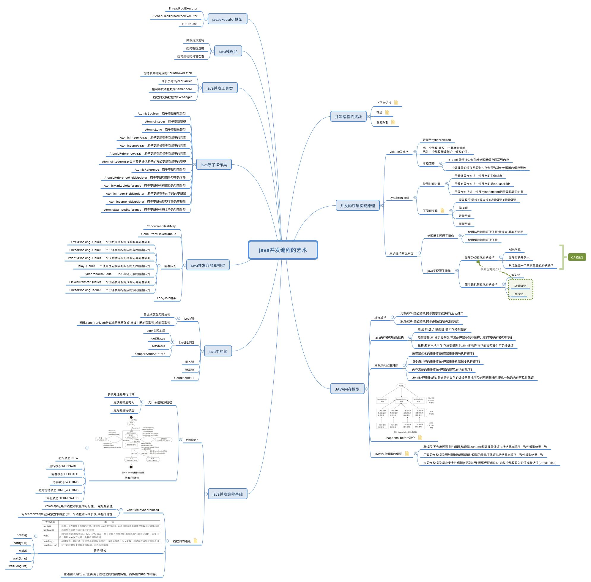
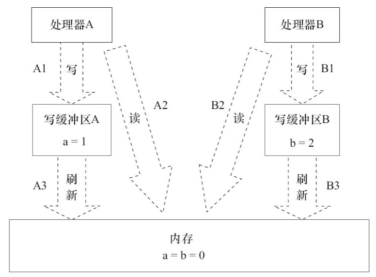
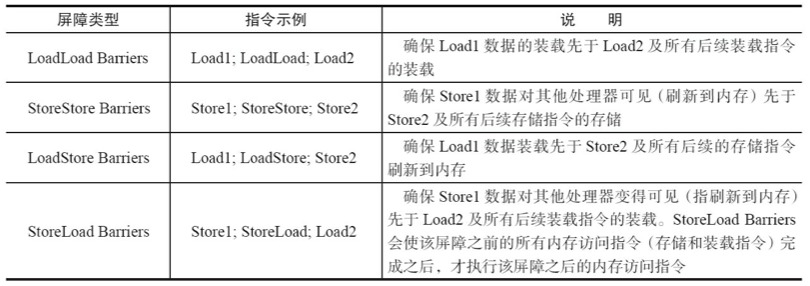
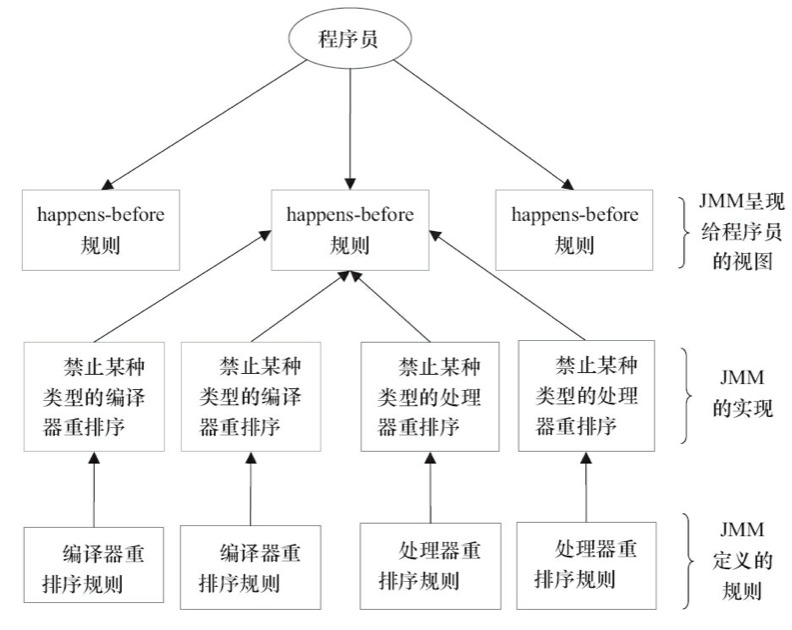
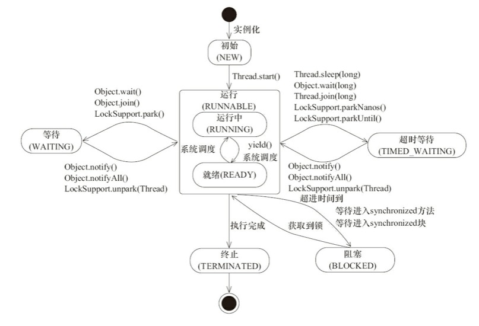
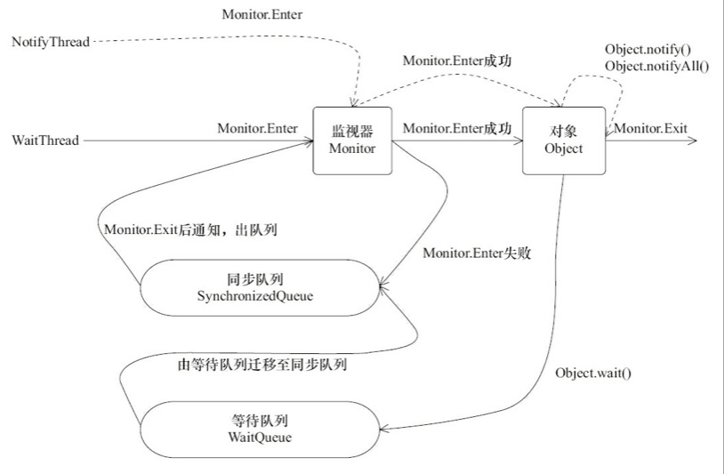

并发编程的挑战
上下文切换
CPU会给每个线程分配时间片用于分配给各个线程执行和占用资源,所以在多线程执行的情况下需要对执行上下文不停切换,会消耗CPU资源,所以在某些特定情况下单线程会比多线程消耗时间少。我们要尽可能的减少上下文切换。
- 无锁并发编程；多线程的锁竞争会引起上下文切换,处理数据时尽量避免使用锁。例如hash取模,CAS算法等。
- 使用最少线程；避免创建不需要的线程,不然会导致大量线程等待。
- 协程；单线程实现多任务调度,并支持多个任务间切换,而避免发生上下文切换。
死锁
锁在多线程编程中处理共享资源有很大的作用,但是在使用锁的时候极有可能在多线程环境中发生死锁,从而导致系统不可用,所以我们应避免死锁的发生,避免死锁的基本方法和注意点。
- 避免一个线程同时获取多个锁,线程获取多个锁资源等会导致资源处理复杂且容易与其他线程发生资源互等待
- 避免一个线程在锁内同时占用多个资源,尽量保证每个锁只占用一个资源。
- 使用定时锁或超时锁,这样当获取锁超时会自动退出锁等待释放资源。
- 对于数据库锁,加锁和解锁必须在一个数据库链接里,否则会出现解锁失败的情况。
资源限制
资源限制是指在进行并发编程时,程序的执行速度受限于计算机硬件资源或软件资源。突破资源限制方式
- 硬件解决方式,可以使用很多廉价的硬件组合编程集群
- 软件解决的方式,可以使资源进行并发的执行提高效率
java并发机制的底层实现
volatile关键字
Java编程语言允许线程访问共享变量，为了 确保共享变量能被准确和一致地更新，线程应该确保通过排他锁单独获得这个变量,java内存模型确保所有线程看到这个变量的值是一致的。
volatile实现原理是通过JVM在volatile变量进行写操作后JVM会向处理器发送一条lock的前缀指令,CPU指令lock指令在多核处理器会按照如下方式执行。
- 将当前处理器缓存行的数据写回到系统内存。
- 写回内存的操作会使在其他CPU内缓存了该内存地址的数据无效。(CPU缓存一致性,每个处理器探测到中线上传播的数据来检查自己缓存的值是否过期,发现自己缓存行对应的内存地址呗修改,就会将当期处理器的缓存行设置成无效状态,当处理器对这个数据进行修改操作的时候,会重新重系统内存中把数据读到处理器缓存里)
synchronized关键字
synchronized是较少进入java进行多线程同步锁处理的关键字,在JDK1.6之前直接通过锁对象实现,获取和释放锁消耗代价都比较大,之后引用了偏向锁,轻量级锁等,其性能有较大的提升。
java每个对象都可以作为锁对象,synchronized对不同的地方使用有不同的锁对象。
对于普通同步方法，锁是当前实例对象。
对于静态同步方法，锁是当前类的Class对象。
对于同步方法块，锁是Synchonized括号里配置的对象。
synchronized关键字的方法和代码同步是通过Monitor对象实现的。对于代码块的同步是编译器将monitorenter插入到同步代码块开始的位置,而monitorexit插入到方法结束和异常处。JVM保证每个monitorenter必须有一个对应的monitorexit,任何synchronized锁对象都有一个monitor与之关联,线程通过对monitor对象的持有进行互斥,使用monitorenter和monitorexit进行锁的获取和释放。
原子操作的实现
原子操作意为不可被中断的一个或一系列操作,一般处理器是通过对缓存和总线加锁的方式实现多处理器之间的原子操作。
通过总线锁保证原子性
通过处理器提供的LOCK#信号,当处理器在总线上输出此信号,其他处理器的请求将被阻塞,该处理器可以独占共享内存。
使用缓存锁保证原子性
一般原子操作我们只需要保证对某个地址的操作是原子性的即可,但是总线锁吧CPU和内存之间的通信锁定了,其他处理器不能操作其他内存数据,开销大。使用缓存锁是如果内区域被缓存在外处理器的缓存行中,并且在lock操作期间被锁定,当执行行锁操作回写内存时不是声明LOCK#信号,而是修改内部内存地址,使用缓存一致性保证原子性。
java实现原子操作
使用循环CAS实现原子操作;利用处理器提供的CMPXCHG指令实现,循环进行CAS操作直到成功为止。CAS能基本保证java的原子操作,但是也会有很多缺点
- ABA问题
- 循环时间长开销大
- 只能保证一个共享变量的原子操作
使用锁机制实现原子同步;只有获得锁的线程才能够操作锁定的内存区域。JVM锁机制有偏向锁,轻量级锁和互斥锁等。除了偏向锁,JVM实现锁的方式都用了循环 CAS,即当一个线程想进入同步块的时候使用循环CAS的方式来获取锁,当它退出同步块的时候使用循环CAS释放锁。
java内存模型
在并发编程中,线程之间通讯和线程之间的同步是关键问题。
线程间的通讯一般使用共享内存和消息传递。在共享内存的并发模型中,通过写-读内存中的公共状态进行隐式通讯。在消息传递的并发模型里,线程之间没有内存公共状态,必须通过显式发送消息进行通讯。
线程同步是指程序中不同线程之间操作发生相对顺序控制机制。在共享内存中,同步是显式进行的,必须指定摸个方法或代码段在线程之间互斥。在消息传递模型中,同步是隐式进行的,因为发送必须在消息的接收之前。
java的并发使用的共享内存模型,所以线程通讯总是隐式进行的,而同步需要显式指定需要互斥的方法或者代码段。
java内存模型的抽象结构
java所有实例域,静态域,和数组都存储在堆内存中,线程之间共享。而局部变量,方法定义参数,异常处理器参数不会再线程之间共享,不会有内存可见性问题。
java线程之间的共享变量存储在主内存中,每个线程都有一个私有的本地内存,内存内存存储该线程读/写共享变量的副本。所以A线程和B线程如故需要通讯,需要经历类似如下流程,A线程把本地内存副本共享变量A1刷新到主内存中,线程B线程到主内存中去读线程A之前更新过的共享变量。
JMM控制一个线程对共享变量的写入何时对另一个线程可见,JMM通过控制住内存与每个线程的本地内存之间的交互,为java程序员提供内存可见性保证。
指令序列的重排序
在程序执行时,为了提高性能,编译器和处理器有时会对执行做重排序。一般分为编译器优化重排序,指令执行重排序,内存系统重排序。其中指令和内存重排序属于处理器重排序,编译器优化属于编译器重排序。JMM对于编译器重排序使用禁止特定类型的编译器重排序,对于处理器重排序使用插入特定类型的内存屏障禁止特定类型的处理器重排序来为程序员提供一致性内存可见的保证。
内存屏障
现在处理器使用写缓冲区临时保存箱内存写入的数据,写缓冲区可以保证指令流水线持续执行,避免由于处理器停顿下来等待向内存写入数据而产生的延迟。可以批处理的方式刷新写缓冲区,以及合并写缓冲区对同一内存的多次写,减少对内存总线的占用。每个处理器上的写缓冲区仅对它所在的处理器可见。

为了保证内存可见性,java编译器在生成指令序列的适当位置会插入内存屏障指令来禁止特定类型的处理器重排序。JMM把内存屏障指令分为4类。

happens-before
在JMM中,如果一 个操作执行的结果需要对另一个操作可见,那么这两个操作之间必须要存在happens-before关系.这里提到的两个操作既可以是在一个线程之内,也可以是在不同线程之间。一般主要的happens-befor规则有以下几种:
- 程序顺序规则;一个线程中的每个操作,happens-before于该线程中的任意后续操作。
- 监视器锁规则;对一个锁的解锁,happens-before于随后对这个锁的加锁。
- volatile变量规则;对一个volatile域的写,happens-before于任意后续对这个volatile域的读。
- 传递性;如果A happens-before B,且B happens-before C,那么A happens-before C。
- start()规则：如果线程A执行操作ThreadB.start()（启动线程B），那么A线程的 ThreadB.start()操作happens-before于线程B中的任意操作。
- join()规则：如果线程A执行操作ThreadB.join()并成功返回，那么线程B中的任意操作 happens-before于线程A从ThreadB.join()操作成功返回。
happens-before规则简单易懂,避免了程序员为了理解JMM提供的内存可见性保证而去学习复杂的重排序规则以及这些规则的具体实现方法

JMM的内存可见性保证
通过对内存屏障以及happens-before的了解,JMM为程序员提供了JVM的内存可见性保证,具体可以分为如下三种:
1.单线程程序;单线程程序不会出现内存可见性问题,编译器、runtime和处理器会共同确保单线程程序的执行结果与该程序在顺序一致性模型中的执行结果相同。
2.正确同步的多线程程序;正确同步的多线程程序的执行将具有顺序一致性(程序的执行 结果与该程序在顺序一致性内存模型中的执行结果相同),JMM通过限 制编译器和处理器的重排序来为程序员提供内存可见性保证。
3.未同步/未正确同步的多线程程序;JMM为它们提供了最小安全性保障:线程执行时读取到的值,要么是之前某个线程写入的值,要么是默认值(0、null、false)。
java并发的基础
线程简介
线程是操作系统调度的最小单元,在一个进程里可以创建多个线程,这些线程都拥有各自的计数器,堆栈和局部变量等属性,并且能够访问共享的内存变量。处理器在这些线程上高速切换,让用户感觉这些线程在同时执行。
为什么使用多线程
多线程在某些特定的条件下并不一定比单线程执行效率高。但是在正确的使用多线程可以显著为程序员和用户带来好处。
- 更多的处理器核心;随着处理器的核心数越来越多,现代计算机更擅长并行计算,能更大效率的使用计算机处理器。
- 更快的响应时间;能极大的利用处理器的效率,在宏观下能并行处理多个任务线,给用户更快的响应时间。
- 更好的编程模型;是开发人员更加专注问题的解决,为问题简历合适的模型,而不是考虑如何将其多线程化。
线程的状态
在java线程的生命周期中有6种不同的状态,在给定的时刻线程只能处于其中的一个状态:
- NEW;初始状态,线程被构建,但是还没有调用start()方法。
- RUNNABLE;运行状态,java线程将操作系统中的就绪和运行两种状态笼统的称为”运行中“
- BLOCKED;阻塞状态,表示线程阻塞于锁
- WAITING;等待状态,表示线程进入等待状态,进入等待状态表示当前线程需要等待其他线程做出一些特定动作(通知或中断)
- TIME_WAITING;超时等待状态,该状态不同于WAITING,它是可以再指定的时间自行返回的。
- TERMINATED;终止状态,表示当前线程已执行完毕

java线程间的通讯
Volatile和synchronized关键字
java支持多线程同时访问一个对象或对象的成员变量,由于每个线程拥有这个变量的拷贝,所以在程序的执行过程中,一个线程锁访问的共享变量不一定是最新的。volatile变量能保证所有线程对变量访问都是最新的。即保证共享变量对所有线程的可见性,但有时我们需要控制方法或代码段的同步,这时候就需要使用synchronized关键字来修饰了,他保证在多线程在同一时刻,只有一个线程处于同步方法或同步块中,即保证了同步块访问的可见性和排他性。
等待/通知机制
一个线程A调用了对象O的wait()方法进入等待状态,另一个线程B调用了对象的notify()或者notifyAll()方法,线程A收到通知后从对象O的wait()方法返回,进而执行后续操作。上述两个线程通过对象O来完成交互,而对象上的wait()和notify()/notifyAll()的关系就如同开关信号,用来完成等待方和通知方之间的交互工作。
1）使用wait()、notify()和notifyAll()时需要先对调用对象加锁。
2）调用wait()方法后，线程状态由RUNNING变为WAITING，并将当前线程放置到对象的 等待队列。
3）notify()或notifyAll()方法调用后，等待线程依旧不会从wait()返回，需要调用notify()或 notifAll()的线程释放锁之后，等待线程才有机会从wait()返回。
4）notify()方法将等待队列中的一个等待线程从等待队列中移到同步队列中，而notifyAll() 方法则是将等待队列中所有的线程全部移到同步队列，被移动的线程状态由WAITING变为 BLOCKED。
5）从wait()方法返回的前提是获得了调用对象的锁。

管道输入/输出流
管道输入/输出流和普通的文件输入/输出流或者网络输入/输出流不同之处在于，它主要 用于线程之间的数据传输，而传输的媒介为内存。
管道输入/输出流主要包括了如下4种具体实现:PipedOutputStream、PipedInputStream、 PipedReader和PipedWriter，前两种面向字节，而后两种面向字符。
java中的锁
锁用来控制多个线程访问共享资源的方式,防止其数据或状态出现不可控的变化。
使用volatile
java提供了volatile关键字,在多个处理器中可以立即读到最新的值,即一个线程修改值后另一个线程立即能获取到更新后的值。
使用synchronized
为了减少锁获取和释放带来的开销在JSE1.6版本锁的状态达到了四个,级别从低到高依次为
无锁状态<偏向锁状态<轻量级锁状态<重量级锁状态随着竞争激烈程度依次递增。synchronize不支持锁的降级,这种策略是为了提高获取和释放锁的效率。
Lock接口
Lock接口的实现基本都是 通过聚合了一个同步器(AQS)的子类来完成线程访问控制的。
队列同步器(AQS的介绍)
AQS是JDK下提供的一套用于实现基于FIFO等待队列的阻塞锁或相关的同步组件的一个同步框架。实现原理是内部通过一个volatile的int类型成功变量表示同步状态,通过CAS进行原子的状态设置,内置的FIFO双向队列来完成获取锁线程的排队工作。
- getState():获取当前同步状态。
- setState(int newState):设置当前同步状态。
- compareAndSetState(int expect,int update):使用CAS设置当前状态，该方法能够保证状态 设置的原子性。
重入锁
就是支持重进入的锁,它表示该锁能够支持一个线程对资源的重复加锁。除此之外,该锁的还支持获取锁时的公平和非公平性选择。在线程获取到锁之后能够再次获取该锁而不会被锁阻塞,重入锁实现原理:
1）线程再次获取锁;锁需要去识别获取锁的线程是否为当前占据锁的线程,如果是,则再 次成功获取。
2）锁的最终释放;线程重复n次获取了锁,随后在第n次释放该锁后,其他线程能够获取到该锁。锁的最终释放要求锁对于获取进行计数自增,计数表示当前锁被重复获取的次数,而锁被释放时,计数自减,当计数等于0时表示锁已经成功释放。
synchronized和reentrantLock等都是可重入锁。
公平与非公平锁的区别,公平性针对获取锁而言,如果一个锁是公平的,那么锁的获取顺序就应该符合请求的绝对时间顺序。
读写锁(ReentrantReadWriteLock)
读写锁在同一时刻可以允许多个读线程访问,但是在写线程访问时,所有的读线程和其他写线程均被阻塞。读写锁维护了一对锁,一个读锁和一个写锁,通过分离读锁和写锁,使得并发性相比一般的排他锁有了很大提升。
写锁的获取与释放
写锁是一个支持重进入的排它锁,如果当前线程已经获取了写锁,则增加写状态。如果当 前线程在获取写锁时,读锁已经被获取(读状态不为0)或者该线程不是已经获取写锁的线程, 则当前线程进入等待状态。
读锁的获取与释放
读锁是一个支持重进入的共享锁,它能够被多个线程同时获取,在没有其他写线程访问(或者写状态为0)时，读锁总会被成功地获取,而所做的也只是(线程安全的)增加读状态。如 果当前线程已经获取了读锁,则增加读状态。如果当前线程在获取读锁时,写锁已被其他线程 获取,则进入等待状态。
锁降级
锁降级指的是写锁降级成为读锁。如果当前线程拥有写锁,然后将其释放,最后再获取读锁,这种分段完成的过程不能称之为锁降级。锁降级是指把持住(当前拥有的)写锁,再获取到读锁,随后释放(先前拥有的)写锁的过程。
RentrantReadWriteLock不支持锁升级(把持读锁、获取写锁,最后释放读锁的过程)。目的也是保证数据可见性,如果读锁已被多个线程获取,其中任意线程成功获取了写锁并更新了数据,则其更新对其他获取到读锁的线程是不可见的。
LockSupport工具
当需要阻塞或唤醒一个线程的时候,都会使用LockSupport工具类来完成相应 工作。LockSupport定义了一组的公共静态方法,这些方法提供了最基本的线程阻塞和唤醒功 能,而LockSupport也成为构建同步组件的基础工具。
Condition接口
任意一个Java对象,都拥有一组监视器方法(定义在java.lang.Object上),主要包括wait()、 wait(long timeout)、notify()以及notifyAll()方法,这些方法与synchronized同步关键字配合,可以 实现等待/通知模式。Condition接口也提供了类似Object的监视器方法,与Lock配合可以实现等 待/通知模式。
java并发容器和框架
ConcurrentHashMap
concurrentHashMap能在即保证并发环境下的安全又能保证高效的读写,其原理是将数据分成一段一段地存 储,然后给每一段数据配一把锁,当一个线程占用锁访问其中一个段数据的时候,其他段的数据也能被其他线程访问。
ConcurrentHashMap是由Segment数组结构和HashEntry数组结构组成。Segment是一种可重 入锁(ReentrantLock)在ConcurrentHashMap里扮演锁的角色;HashEntry则用于存储键值对数据。一个ConcurrentHashMap里包含一个Segment数组。Segment的结构和HashMap类似,是一种 数组和链表结构。一个Segment里包含一个HashEntry数组,每个HashEntry是一个链表结构的元素,每个Segment守护着一个HashEntry数组里的元素,当对HashEntry数组的数据进行修改时,必须首先获得与它对应的Segment锁。
ConcurrentLinkedQueue
ConcurrentLinkedQueue是一个基于链接节点的无界线程安全队列,它采用先进先出的规则对节点进行排序,当我们添加一个元素的时候,它会添加到队列的尾部;当我们获取一个元素时,它会返回队列头部的元素。
阻塞队列
阻塞队列(BlockingQueue)是一个支持两个附加操作的队列。这两个附加的操作支持阻塞的插入和移除方法。
支持阻塞的插入方法:意思是当队列满时,队列会阻塞插入元素的线程,直到队列不 满。
支持阻塞的移除方法:意思是在队列为空时,获取元素的线程会等待队列变为非空。
阻塞队列常用于生产者和消费者的场景,生产者是向队列里添加元素的线程,消费者是从队列里取元素的线程。阻塞队列就是生产者用来存放元素、消费者用来获取元素的容器。
JDK 7提供了7个阻塞队列
- ArrayBlockingQueue:一个由数组结构组成的有界阻塞队列。
- LinkedBlockingQueue:一个由链表结构组成的有界阻塞队列。
- PriorityBlockingQueue:一个支持优先级排序的无界阻塞队列。
- DelayQueue:一个使用优先级队列实现的无界阻塞队列。
- SynchronousQueue:一个不存储元素的阻塞队列。
- LinkedTransferQueue:一个由链表结构组成的无界阻塞队列。
- LinkedBlockingDeque:一个由链表结构组成的双向阻塞队列。
阻塞队列是使用通知模式实现。所谓通知模式,就是当生产者往满的队列里添加元素时会阻塞住生产者,当消费者消费了一个队列中的元素后,会通知生产者当前队列可用。
Fork/Join框架
Fork/Join框架是Java 7提供的一个用于并行执行任务的框架,是一个把大任务分割成若干个小任务,最终汇总每个小任务结果后得到大任务结果的框架。
java中的原子操作类
AtomicBoolean：原子更新布尔类型
AtomicInteger：原子更新整型
AtomicLong：原子更新长整型
AtomicIntegerArray：原子更新整型数组里的元素
AtomicLongArray：原子更新长整型数组里的元素
AtomicReferenceArray：原子更新引用类型数组里的元素
AtomicIntegerArray类主要是提供原子的方式更新数组里的整型
AtomicReference：原子更新引用类型
AtomicReferenceFieldUpdater：原子更新引用类型里的字段
AtomicMarkableReference：原子更新带有标记位的引用类型
AtomicIntegerFieldUpdater：原子更新整型的字段的更新器
AtomicLongFieldUpdater：原子更新长整型字段的更新器
AtomicStampedReference：原子更新带有版本号的引用类型
java中的并发工具类
多线程完成的CountDownLatch
CountDownLatch允许一个或多个线程等待其他线程完成操作。
同步屏障CyclicBarrier
CyclicBarrier的字面意思是可循环使用(Cyclic)的屏障(Barrier)它要做的事情是,让一 组线程到达一个屏障(也可以叫同步点)时被阻塞,直到最后一个线程到达屏障时,屏障才会 开门,所有被屏障拦截的线程才会继续运行。
CountDownLatch的计数器只能使用一次,而CyclicBarrier的计数器可以使用reset()方法重置。所以CyclicBarrier能处理更为复杂的业务场景。例如,如果计算发生错误,可以重置计数 器,并让线程重新执行一次。
控制并发线程数的Semaphore
Semaphore（信号量）是用来控制同时访问特定资源的线程数量，它通过协调各个线程，以 保证合理的使用公共资源。
线程交换数据的Exchanger
Exchanger(交换者)是一个用于线程间协作的工具类。Exchanger用于进行线程间的数据交 换。它提供一个同步点,在这个同步点,两个线程可以交换彼此的数据。这两个线程通过 exchange方法交换数据,如果第一个线程先执行exchange()方法,它会一直等待第二个线程也 执行exchange方法,当两个线程都到达同步点时,这两个线程就可以交换数据,将本线程生产出来的数据传递给对方。
线程池
线程池的处理流程如下
- 线程池判断核心线程池里的线程是否都在执行任务。如果不是，则创建一个新的工作 线程来执行任务。如果核心线程池里的线程都在执行任务，则进入下个流程。
- 线程池判断工作队列是否已经满。如果工作队列没有满，则将新提交的任务存储在这 个工作队列里。如果工作队列满了，则进入下个流程。
- 线程池判断线程池的线程是否都处于工作状态。如果没有，则创建一个新的工作线程 来执行任务。如果已经满了，则交给饱和策略来处理这个任务。
Executor框架
Executor框架的主要接口
- Executor是一个接口，它是Executor框架的基础，它将任务的提交与任务的执行分离开
- ThreadPoolExecutor是线程池的核心实现类，用来执行被提交的任务。
- ScheduledThreadPoolExecutor是一个实现类，可以在给定的延迟后运行命令，或者定期执 行命令ScheduledThreadPoolExecutor比Timer更灵活，功能更强大。
- Future接口和实现Future接口的FutureTask类，代表异步计算的结果。
- Runnable接口和Callable接口的实现类，都可以被ThreadPoolExecutor或ScheduledThreadPoolExecutor执行。